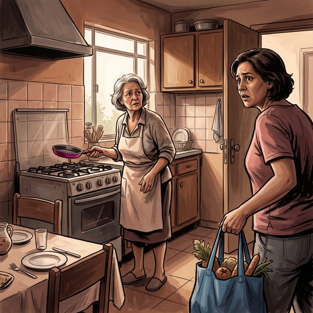

Consulta rápida à beira do leito
Condutas, doses e interações.
Referências da aula · 5
- Livingston G, Huntley J, Liu KY, et al. Dementia prevention, intervention, and care: 2024 report of the Lancet standing Commission. Lancet. 2024;404(10452):572-628.
- Hermann P, Zerr I. Rapidly progressive dementias: aetiologies, diagnosis and management. Nat Rev Neurol. 2022;18(6):363-76. PMID 35508635. doi:10.1038/s41582-022-00659-0.PubMedDOI
- Hermann P, Appleby B, Brandel JP, et al. Biomarkers and diagnostic guidelines for sporadic Creutzfeldt-Jakob disease. Lancet Neurol. 2021;20(3):235-46. PMID 33609480. doi:10.1016/S1474-4422(20)30477-4.PubMedDOI
- Geschwind MD. Rapidly progressive dementia. Continuum (Minneap Minn). 2016;22(2 Dementia):510-37. PMID 27042906. doi:10.1212/CON.0000000000000319.PubMedDOI
- Graus F, Titulaer MJ, Balu R, et al. A clinical approach to diagnosis of autoimmune encephalitis. Lancet Neurol. 2016;15(4):391-404. PMID 26906964. doi:10.1016/S1474-4422(15)00401-9.PubMedDOI
Documentos oficiais
Leis e publicações do Ministério da Saúde sobre o cuidado da pessoa idosa, de acesso livre.
Abrir os documentos